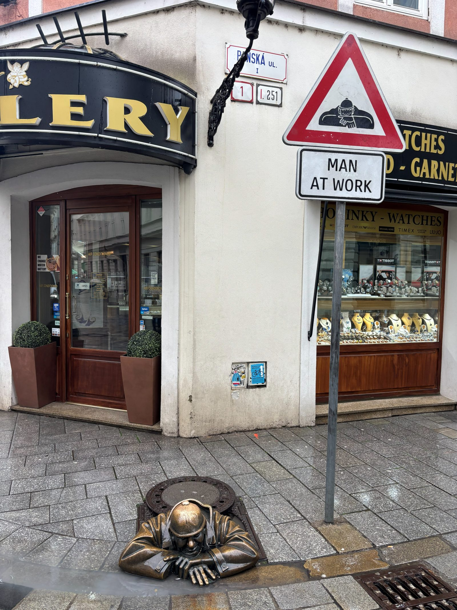
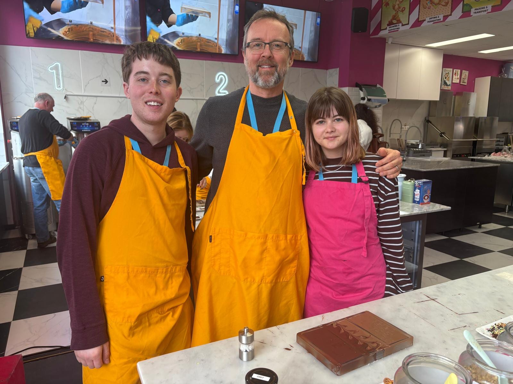
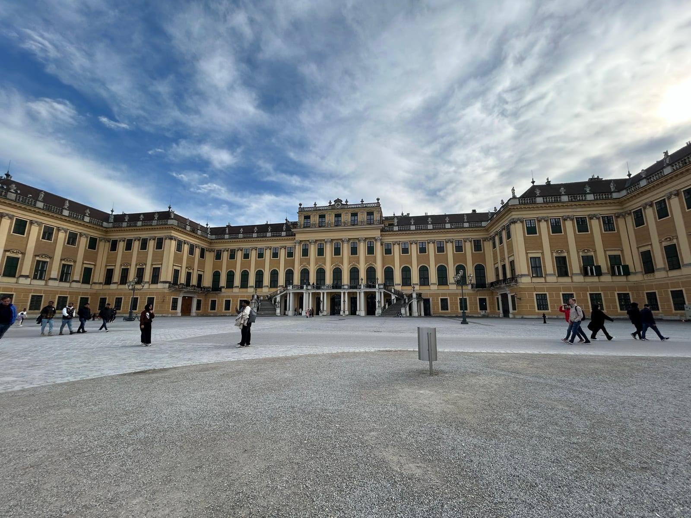
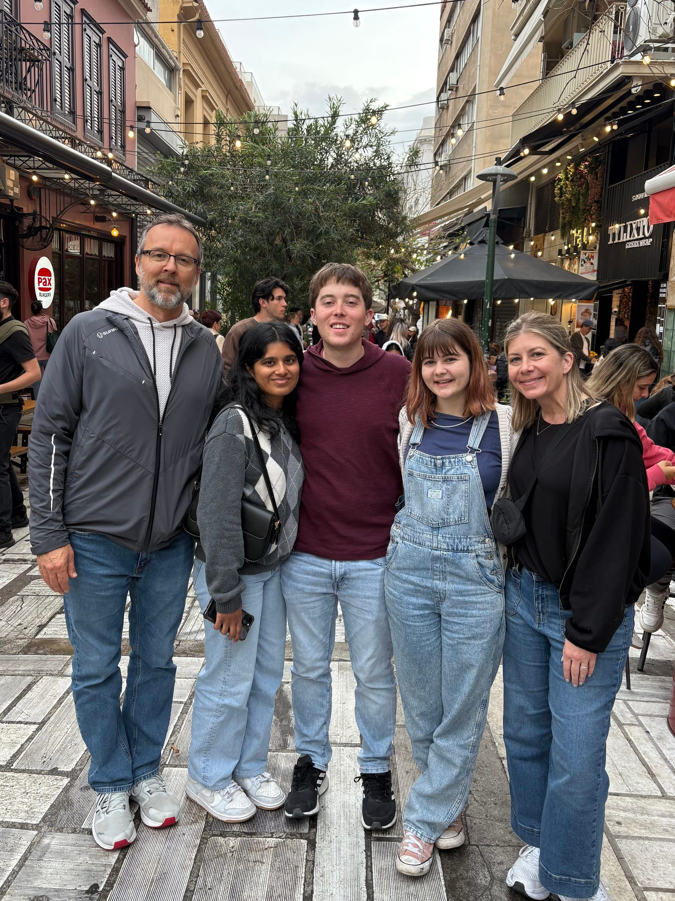
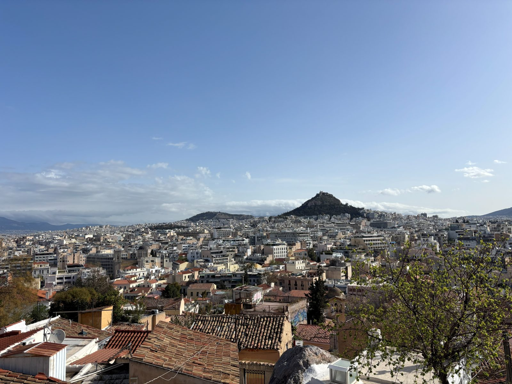
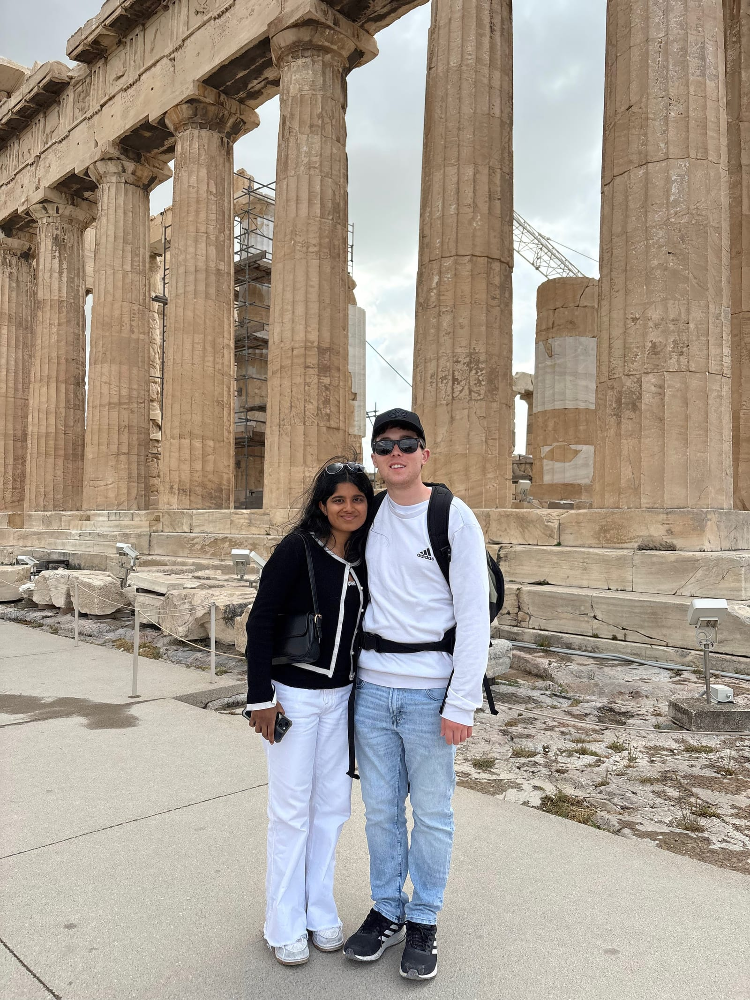
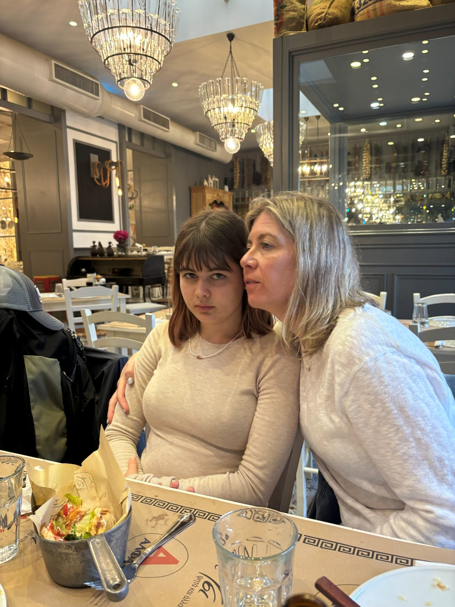
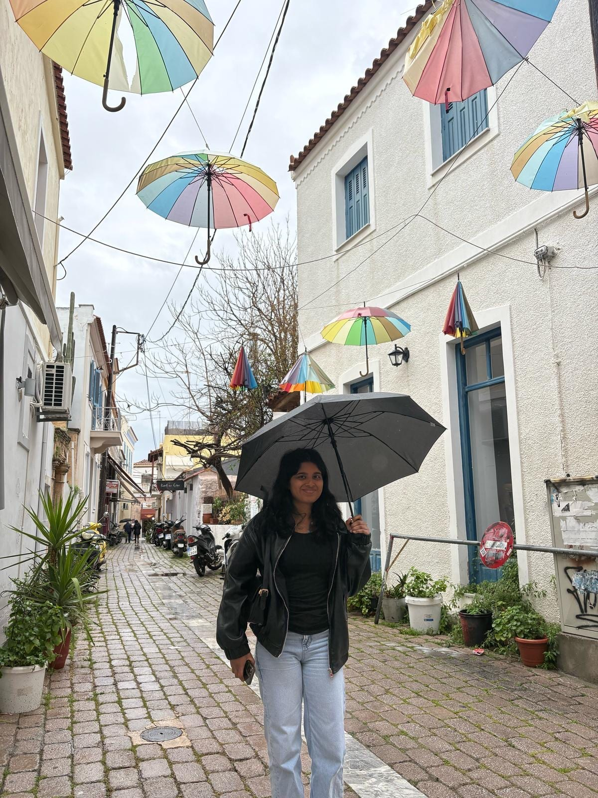
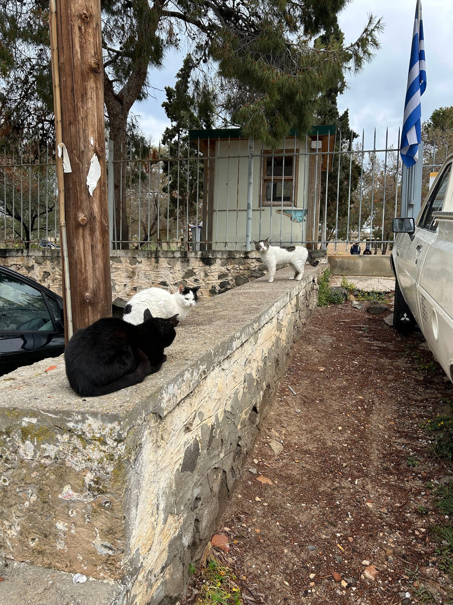

VIENNA-ATHENS
Friday (Vienna)
- Got up and met my parents in the airport lounges before our 9:10 flight to Vienna
- Met Lola at the gate when we landed and took the train into the city
- Ate lunch at Zur Gruab'n Alexandra Richter
- Nice authentic Austrian food away from the touristy areas
- Walked to the Airbnb and checked in
- Very nice place, lots of space, lots of room
- Walked to St. Stephens Cathedral
-
1 / 3
- Above average, pretty big inside
- Went to the Austrian National Library
-
1 / 2
- All the books are so big but it looks normal because the shelves and stuff are huge too
- Saw the outside of the Opera House and regrouped at the Airbnb
- Ate at Vegiezzz for dinner
- All vegan/vegetarian and good food
- Hung out and watched Gilmore Girls and slept
Saturday (Vienna)
- Got up and brought home some bread and pastries for breakfast
- Left for the Hauptbahnhof at like 9:00 for our 9:45 train to Bratislava
- Walked to the UFO tower and then across the river to Bratislava Castle
-
1 / 2
- Didn't go in since we didn't have much time but the view from the top was cool enough
- Walked around Old Town and saw Čumil

- Ate at Zylinder Cafe Restaurant
- Very nice place with great prices and good food
- Saw the Blue Church before we took a Bolt to Hrad Devin
-
1 / 2
- Old castle ruins blown up by Napoleon
- Great view of a more rural and hilly river area
- Watched some kind of youth ritual happening, there were a ton of teenagers and one adult, they sang and performed some sort of ceremony with a small wreath and six of the teenagers being the center of it
- Took an Uber back to the station and got on the 4:16 train back to Vienna
- Grabbed food at the grocery store and ate dinner at the Airbnb
- I picked up some Kaiserschmarrn for us to share
- Tasty dessert made with pancake bite kinds of things and sweet toppings like Nutella, fruit, Biscoff, etc.
- Watched Gilmore Girls, played cards and went to bed
Sunday (Vienna)
- Got up and left for our bike tour at 9:30
-
1 / 2
- Guide was great and the ride wasn't bad except for the weather
- It was super cold and windy for the first half of the three hour tour
- Got lunch at Pixel Pizza before the Chocolate Museum
- Walked around and waited in the Chocolate Museum for 30 min before our chocolate making session

- Fun to make some personalized chocolates by hand
- Saw Schönbrunn Palace

- Summer home of the old queen
- There was an Easter market happening when we went so it was super busy
- Also walked through the gardens a bit
- Regrouped at home before dinner at Gorilla Kitchen
- Good burritos, like chipotle
- Has some of the spiciest food we've had in Europe
- Went straight to Annakirche for the Mozart, Haydn, and Beethoven concert
-
1 / 2
- Boring for me but I think others enjoyed it
- Grabbed souvenirs and a local chocolate cake as well before doing some packing and going to bed
Monday (Athens)
- Left the Airbnb at 7:20 for our 9:35 flight
- Left 15 minutes late
- Checked in and got pizza at the place under our Airbnb for lunch
- Met our guide for our food tour at 4:30 and tried all kinds of Greek food and some drinks

- My favorite was the Mutton gyros and the sausage/cinnamon pie
- Went to a rooftop bar but the actual roof part was closed so we were actually inside but still had a great view of the Acropolis
-
1 / 2
- Went home and went to bed
Tuesday (Athens)
- Met Lola for breakfast at Brunchers around 9
- Walked up to a decent viewpoint in Anafiotika

- Took a Taxi to Mount Lycabettus
-
1 / 2
- The driver said we couldn't drive all the way up so he dropped us at the cable car which took us up to the top
- Great 360 views of the city and surrounding mountains
- Grabbed some snacks and regrouped at the Airbnb
- Met our Acropolis tour group at Hadrian's Arch at 2:30
-
1 / 4
- Good tour making our way up Acropolis and learning about everything on the way up to the top
- Ended at the Parthenon and we walked down to get a car to take us to Lola's

- Walked from there to a Greek restaurant with really good and cheap food

- Got gelato and other desserts after
- Went home, showered, and slept
Wednesday (Athens)
- Got up and left by 7:15 for our 8:30 ferry to Aegina
- Even though they said at least one hour early, the ferry wasn't there until 15 min before departure
- Got to Aegina and wandered around going into a few shops and getting brunch

- Cool town, but it was rainy and wet
- Walked to the beach and Temple of Apollo
-
1 / 2
- Watched some cats fighting over a spot to sit

- Found a good place for lunch and stayed there until it was almost time to go
- On the way to the ferry we stopped at this one old lady's pistachio stand
- She kept giving us free samples of everything
- Pistachio butter, vodka, candy, sweetened butter, and actual pistachios
- She was skeptical as to whether I was old enough to drink and kept calling me baby
- She would bring out a new sample and say "baby come here, for you" and hand me something else
- She was hilarious and we ended up buying a bunch of stuff from her and on the way out she packed me a bag of candies "for baby"
- She kept giving us free samples of everything
- Got on the ferry at 1:50 back towards Athens
- Got back, grabbed our bags, and called a taxi to the airport
- Hung out at the lounges for an hour and boarded but then they told us it was delayed a while due to some kind of German Airspace problem
- Made it home just fine and pretty much went right to bed